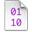

System Tracing
Shark’s System Trace configuration records an exact trace of system-level events, such as system calls, thread scheduling decisions, interrupts, and virtual memory faults. System Trace allows you to measure and understand how your code interacts with Mac OS X and how the threads in your multi-threaded application interact with each other. If you would like to gain a clear understanding of the multi-threaded behavior of a given program, characterize user vs. system processor utilization, or understand the virtual memory paging behavior of your application, then System Trace can give you the necessary insight.
In this section:
Tracing Methodology
Basic Usage
Interpreting Sessions
Sign Posts
Tips and Tricks
Tracing Methodology
System Trace complements Shark’s default Time Profiling configuration (see “Time Profiling”) by allowing you to see all transitions between OS and user code, a useful complement to the statistical sampling techniques used by Time Profiling. For example, in “Basic Usage” we can see an example of a thread of execution sampled by both a Time Profile (on top) and a System Trace (on the bottom). Time profiling takes evenly-spaced samples over the course of time, allowing us to get an even distribution of samples from various points of execution in both the user and system code segments of the application. This gives us a statistical view of what the processor was doing, but it does not allow us to see all user-kernel transitions — the first, brief visit to the kernel is completely missed, because it falls between two sample points. System tracing, in contrast, records an event for each user-kernel transition. Unlike time profiling, this does not give us an overview of all execution, because we are looking only at the transition borders and never in the execution time between them, but we gain an exact view of all of the transitions. This precision is often more useful when debugging user-kernel and multithreading problems, because these issues frequently hinge upon managing the precise timing of interaction events properly in order to minimize the time that threads spend waiting for resources (blocked), as opposed to minimizing execution time.
As with most other profiling options available from Shark, System Trace requires no modification of your binaries, and can be used on released products. However, it is possible to insert arbitrary events into the System Trace Session using Sign Posts, which are discussed in detail in “Sign Posts,” if the built-in selection of events simply does not record enough information.
Basic Usage
In its simplest usage, all you need to do is select System Trace from the Configuration Popup and start sampling. Shark will then capture up to 1,000,000 system events per-processor (a user-tunable limit), process the results, and display a session (see “Interpreting Sessions”). In most cases, this should be more than enough data to interpret. Note that you cannot select a single process before you start tracing using the standard pop-up menu (from “Main Window”); instead, if you only want to see a trace for a specific process or thread, you must narrow the scope of the traced events after the session is recorded (see “Interpreting Sessions”).
In order to allow direct correlation of system events to your application’s code, Shark records the following information with each event:
Start Time
Stop Time
A backtrace of the user-space function calls (callstack) associated with each event
Additional data customized depending on the event type that triggers recording (see “Trace View In-depth” for details)
In the course of profiling your application, it may become necessary to trim or expand the number of events recorded. Most of the typical options are tunable by displaying the Mini Config Editor, depicted in Figure 3-2.
The Mini Config Editor adds the following profiling controls to the main Shark window:
Start Delay— Amount of time to wait after the user selects “Start” before data collection actually begins.
Time Limit— The maximum amount of time to record samples. This is ignored if Windowed Time Facility is enabled, or if Sample Limit is reached before the time limit expires.
Sample Limit — The maximum number of samples to record. Specifying a maximum of N samples will result in at most N samples being taken, even on a multi-processor system, so this should be scaled up as larger systems are sampled. On the other hand, you may need to reduce the sample limit if Shark runs out of memory when you attempt to start a system trace, because it must be able to allocate a buffer in RAM large enough to hold this number of samples. When the sample limit is reached, data collection automatically stops, unless the Windowed Time Facility is enabled (see below). The Sample Limit is always enforced, and cannot be disabled.
Windowed Time Facility— If enabled, Shark will collect samples until you explicitly stop it. However, it will only store the last N samples, where N is the number entered into the Sample Limit field. This mode is described in “Windowed Time Facility (WTF).”
If the user-level callstacks associated with each system event are of no interest to you, it is possible to disable their collection from within the Plugin Editor for the System Trace Data Source (see “System Trace Data Source PlugIn Editor”), further reducing the overhead of system tracing. With callstack recording disabled, Shark will still record the instruction pointer associated with each event, but will not record a full callstack. Since most system calls come from somewhere within library code, you may lose some ability to relate system events to your code with callstack recording disabled.
Out of memory errors?: If you see these when starting a system trace, then just reduce the Sample Limit value until Shark is able to successfully allocate a buffer for itself.
Interpreting Sessions
Upon opening a System Trace session, Shark will present you with three different views, each in a separate tab. Each viewer has different strengths and typical usage:
The Summary View provides an overall breakdown of where and how time was spent during the profiling session, and is very analogous to the Profile Browser used with Time Profile. You can use this information to ensure your application is behaving more-or-less as expected. For example, you can see if your program is spending approximately the right amount of time in system calls that you were expecting. You can even click on the System Call Summary to find out which system calls are being used and open the disclosure triangles to see where, in your code, these calls are happening.
The Trace View provides a complete trace of system events during the profiling session. Does the Summary View show that your CPU-bound threads are only getting an average of 200 microseconds of processor time every time they are scheduled? Flip to the Trace View to see why your threads are blocking so soon.
The Timeline View provides a complete picture of system activity over the course of a session, similar to Time Profile’s Chart View. You can use it to verify that your worker threads are running concurrently across all the processors in your system, or to visually inspect when various threads block.
All views show trace events from a configurable scope of your System Trace. The default scope is the entire system, but you can also focus the session view on a specific process, and even a specific thread within that process. Independently, you can choose to only view events from a single CPU. For example, when focusing on CPU 1 and thread 2, you will see only the events caused by thread 2 that also occurred on CPU 1. The current settings for the scope are set using the three popup menus at the bottom of all System Trace session windows, which select process, thread, and CPU, respectively.
Summary View In-depth
The Summary View is the starting point for most types of analysis, and is shown in Figure 3-3. Its most salient feature is a pie chart that gives an overview of where time was spent during the session. Time is broken down between user, system call, virtual memory fault, interrupt, idle, and other kernel time.
Underneath the pie chart, there are individual summaries of the various event types. Each of these is discussed in turn in the following subsections.
Scheduler Summary
The Scheduler Summary tab, shown in Figure 3-4, summarizes the overall scheduling behavior of the threads running in the system during the trace. Each thread is listed in the outline underneath its owning process, as shown at (1). To the left of each thread’s name, Shark displays the number of run intervals of that thread (or all threads within a process) that it recorded in the course of this session.
The Total, Avg, Min and Max columns list the total, average, minimum, and maximum values for the selected metric. A popup button below the outline (2) lists the supported metrics:
Busy Time— Total time spent running, including both user and non-idle system time
User Time— Total time spent running in user space
System Time— Total time spent running in supervisor space (kernel and driver code)
Priority— Dynamic thread priority used by the scheduler
Information about how your application’s threads are being scheduled can be used to verify that what is actually happening on the system matches your expectations. Because the maximum time that a thread can run before it is suspended to run something else (the maximum quantum or time slice) is 10ms on Mac OS X, you can expect that a CPU-bound thread will generally be scheduled for several milliseconds per thread tenure. If you rewrite your CPU-bound, performance-critical code with multiple threads, and System Trace shows that these threads are only running for very short intervals (on the order of microseconds), this may indicate that the amount of work given to any worker thread is too small to amortize the overhead of creating and synchronizing your threads, or that there is a significant amount of serialization between these threads.
Note on Thread IDs: Thread IDs on Mac OS X are not necessarily unique across the duration of a System Trace Session. The Thread IDs reported by the kernel are not static, single use identifiers - they are actually memory addresses. When you destroy a thread, and then create a new one immediately thereafter, there is a very high probability that the new thread will have the same thread ID as the one you just destroyed. This can lead to some confusion when profiling multithreaded applications that create and destroy many threads.
There are a couple of distinct ways to avoid this confusion. Your first option is to park your threads when you are profiling; if you don’t let any new threads exit for the duration of profiling, it is not possible to get duplicate thread IDs. A better option is to utilize a work queue model: create enough threads to fully populate the processors in your system, and instead of destroying the threads when they are out of work, put them on a work queue to be woken up later with more work.System Calls Summary
The System Calls Summary tab, shown in Figure 3-5, allows you to see the breakdown of system call time for each specific system call. Because System Trace normally records the user callstack for each system call, you can use this view to correlate system call time (and other metrics) directly to the locations in your application’s code that make system calls. This view is quite similar to Time Profile’s standard profile view, described in “Profile Browser.” In fact, many of the same tools are available. For example, the system call profile can be viewed as either a heavy or tree view (selected using the popup menu at the bottom). Similarly, data mining can be used to simplify complex system call callstacks (see “Data Mining”).
More settings for modifying this display are available in the Advanced Settings drawer, and are described in “Summary View Advanced Settings.”
Note on System Trace callstacks: In rare cases, it is not possible for System Trace to accurately determine the user callstack for the currently active thread. In this case, it may just copy the callstack from the previous sample. While it occurs so rarely that it is usually not a problem, this “interpolation” can occasionally result in bad callstack information. As a result, you should carefully analyze Shark’s system trace callstacks when the callstack information seems unusual or impossible.
Virtual Memory (VM) Faults Summary
The VM Faults Summary tab, depicted in Figure 3-6, allows you to see what code is causing virtual memory faults to occur. The purpose of this view is to help you find behavior that is normally transparent to software, and is obscured in a statistical time profile. Functionally, it acts just like the System Calls Summary tab.
By default, virtual memory faults are broken down by type:
Page In— A page was brought back into memory from disk.
Page Out— A page was pushed out to disk, to make room for other pages.
Zero Fill— A previously unused page marked “zero fill on demand” was touched for the first time.
Non-Zero Fill— A previously unused page not marked “zero fill on demand” was touched for the first time. Generally, this is only used in situations when the OS knows that page being allocated will immediately be overwritten with new data, such as when it allocates I/O buffers.
Copy on Write (COW)— A shared, read-only page was modified, so the OS made a private, read-write copy for this process.
Page Cache Hit— A memory-resident but unmapped page was touched.
Guard Fault— A page fault to a “guard” page. These pages are inserted just past the end of memory buffers allocated using the special MacOS X “guard malloc” routines, which can be used in place of normal memory allocations during debugging to test for buffer overrun errors. One of these faults is generated when the buffer overruns.
Failed Fault— Any page fault (regardless of type) that started and could not be completed. User processes will usually die when these occur, but the kernel usually handles them more gracefully in order to avoid a panic.
In some cases, virtual memory faults can represent a significant amount of overhead. For example, if you see a large amount of time being spent in zero fill faults, and correlate it to repeated allocation and subsequent deallocation of temporary memory in your code, you may be able to instead reuse a single buffer for the entire loop, reallocating it only when more space is needed. This type of optimization is especially useful in the case of very large (multiple page) allocations.
More settings for modifying this display are available in the Advanced Settings drawer, and are described in “Summary View Advanced Settings.”
Summary View Advanced Settings
When you are viewing the System Calls Summary and VM Faults Summary tabs, several options are available in the Advanced Settings drawer (see “Advanced Settings Drawer”), as seen in Figure 3-7:
Weight By Popup— the summary can construct the profile of system calls using several metrics. The following metrics can be selected:
CPU Time— Total system call or fault time spent actively running on a processor
Wait Time— Total system call or fault time spent blocked waiting on a resource or event
Total Time— Total system call or fault time, including both CPU and waiting time
Count— Total system call or fault count
Size— (VM fault tab only) Total number of bytes faulted, since a single fault can sometimes affect more than one page
Display Popup— This lets you choose between having the Self and Total columns display the raw Value for the selected metric or the percent of total system call or fault time. You can also change the columns between these modes individually by double clicking on either column.
Group by System Call/VM Fault Type— By default, the metrics are listed for each of the different types of system calls or faults in the trace. You can see summary statistics for all system calls or faults by deselecting this.
Callstack Data Mining— The System Call and VM Fault summaries support Shark’s data mining options, described in “Data Mining,” which can also be used to customize the presentation of the data.
Trace View In-depth
The Trace View lists all of the events that occurred in the currently selected scope. Because events are most commonly viewed with “System” scope (all processes and all CPUs), each event list has a Process and a Thread column describing the execution context in which it took place.
As with the Summary View, the Trace View is sub-divided according to the class of event. The events in each event class (scheduler events, system calls, and VM Faults) are separately indexed, starting from 0. Each tab in the Trace View lists the index of the event (specific to each event class) in the Index Column.
Each tab in the Trace View supports multi-level (hierarchical) sorting of the event records, based on the order that you click column header row cells. This provides an extremely flexible means for searching the event lists. For example, clicking on the “CPU Time” column title will immediately sort by CPU Time. If you then click on the “Name” column title Shark will group events by Name, and then within each group of identically named events it will sort secondarily by CPU Time.
You may click on events in the table to select them. As with most Mac tables, you may Shift-click to extend a contiguous selection or Command-click to select discontiguous events. Below the main Trace View table, Shark presents a line summarizing key features of the selected trace event(s). This is particularly convenient if you select multiple events at once, because Shark will automatically add up key features of the selected events together and present the totals here.
You should note that double-clicking on any event in the trace list will jump to that event in the Timeline View. This is a helpful way to go directly to a spot of interest in a System Trace, because you can reliably scroll to the same point by double-clicking on the same trace element.
The remainder of this section will examine the three different tabs in the trace view window.
Scheduler Trace
The Scheduler Trace Tab, shown in Figure 3-8, lists the intervals that threads were running on the system. The meanings of the columns are as follows:
Index— A unique index for the thread interval, assigned by Shark
Process— Shows the process to which the scheduled thread belongs. The process’ PID is in brackets after the name, which can be helpful if you have multiple copies of a process running simultaneously.
Thread— The kernel’s identifier for the thread
Time— Total time (the sum of user and system time) that the thread ran
User Time— Time that the thread spent executing user code during the interval
Sys Time— Time that the thread spent executing system (kernel) code during the interval
Δt Prev— Time since this thread was previously scheduled
Reason— Reason that the thread tenure ended (described in “Thread Run Intervals”)
Priority— Dynamic scheduling priority of the thread
System Call Trace
The System Call Trace Tab, shown in Figure 3-9, lists the system call events that occurred during the trace. In most respects, this Tab behaves much like the scheduler tab described previously, but it does have a couple of new features.
You can inspect the first five integer arguments to each system call by selecting an entry in the table and looking at the arg fields near the bottom of the window.
The current user callstack is recorded for each system call. You can toggle the display of the Callstack Table by clicking the button in the lower right corner of the trace table. When visible, the Callstack Table displays the user callstack for the currently selected system call entry.
The meanings of the columns are as follows:
Index— A unique index for the system call event, assigned by Shark
Interval— Displays thread run interval(s) in which the system call occurred. Each system call occurs over one or more thread run intervals . If the system call begins and ends in the same thread interval, the Interval Column for that event lists only a single number: the index of the thread interval in which the event occurred. Otherwise, the beginning and ending thread interval indices are listed. Because it is possible for an event to start before the beginning of a trace session, or end after a trace session is stopped, event records may be incomplete. Incomplete events are listed with “?” for the unknown thread run interval index, and have a gray background in the event lists.
Process— Shows the process in which the system call occurred. The process’ PID is in brackets after the name, which can be helpful if you have multiple copies of a process running simultaneously.
Thread— Thread in which the system call occurred
Name— Name of the system call
Return— Shows the return value from the system call. Many system calls return zero for success, and non-zero for failure, so you can often spot useless system calls by looking for multiple failures. Eliminating streams of these can reduce the amount of time an application spends in wasted system call overhead.
CPU Time— Time spent actively running on a processor
Wait Time— Time spent blocked waiting on a resource or event
VM Fault Trace
The VM Fault Trace Tab, illustrated in Figure 3-10, lists the virtual memory faults that occurred. The current user callstack, if any, is recorded for each VM fault.
You can toggle the display of the Callstack Table, which displays the user callstack for the currently selected VM fault entry, by clicking the button in the lower right corner of the trace table.
The columns in the trace view have the following meanings in this tab:
Index— A unique index for the VM fault event, assigned by Shark
Interval— Displays thread run interval(s) in which the VM fault occurred. Each fault occurs over one or more thread run intervals. If the fault begins and ends in the same thread interval, the Interval Column for that event lists only a single number: the index of the thread interval in which the event occurred. Otherwise, the beginning and ending thread interval indices are listed. Because it is possible for an event to start before the beginning of a trace session, or end after a trace session is stopped, event records may be incomplete. Incomplete events are listed with “?” for the unknown thread run interval index, and have a gray background in the event lists.
Process— Shows the process in which the VM fault occurred. The process’ PID is in brackets after the name, which can be helpful if you have multiple copies of a process running simultaneously.
Thread— Thread in which the VM fault occurred
Type— Fault type (see “Virtual Memory (VM) Faults Summary ” for descriptions)
CPU Time— Time spent actively running on a processor
Wait Time— Time spent blocked waiting on a resource or event
Library— In the case of a code fault, this lists the framework, library, or executable containing the faulted address. In contrast, it is blank for faults to data regions, such as the heap or stack.
Address— Address in memory that triggered the fault
Size— Number of bytes affected by the fault, an integral multiple of the 4096-byte system page size
Timeline View In-depth
The Timeline View, displayed in Figure 3-11, allows you to visualize a complete picture of system events and threading behavior in detail, instead of just summaries. Each row in the timeline corresponds to a traced thread, with the horizontal axis representing time. At a glance, you can see when and why the threads in your system start and stop, and how they interact with the system when they are running.
Session timelines are initially shown in their entirety. Because a typical session has thousands or millions of events in it, this initially means that you can only see a broad overview of when threads are running. Events such as system calls and VM faults are labeled with icons, but these icons are automatically hidden if there is insufficient space to display them, as is usually the case when the trace is completely zoomed out. Hence, to see and examine these events, you will need to zoom in on particular parts of the timeline display and then maneuver around to see other parts of the display. There are 3 main ways to perform this navigation:
Scroll/Zoom Bars— Use the scroll bar at the bottom of the window to scroll side to side, and zoom with the slider at the top of the window.
Mouse Dragging— Click and drag anywhere (or “rubber-band”) within the main Timeline View to form a box. When you release the mouse bottom, the Timeline View will zoom so that the horizontal portion of the box fits on screen (until you reach the maximum zoom level).
Keyboard Navigation— After highlighting a Thread Run Interval by clicking on it, the Left or Right Arrow keys will take you to the previous or next run interval from the same thread, respectively. If you highlighted a System Call, VM Fault, or Interrupt, the arrow keys will scroll to the next event of any of these types. Holding the Option key, however, will scroll to the next event of the same type. For example, if you had clicked on a Zero Fill Fault, the Right Arrow would take you to the next event on the same thread, whether it was a System Call, VM Fault, or Interrupt, but Option-Right Arrow would take you to the next Zero Fill Fault on the same thread.
If you have too many threads, the Timeline View allows you to limit the scope of what is displayed using the standard scope-control menus described in “Interpreting Sessions,” at the bottom of the window. There are also many options for filtering out events in the Advanced Settings drawer, as described in “Timeline View Advanced Settings.”
Thread Run Intervals
Each time interval that a thread is actively running on a CPU is a thread run interval. Thread run intervals are depicted as solid rectangles in the Timeline View, as is shown in Figure 3-12, with lines depicting context switches joining the ends of the two threads running before and after each context switch.
Thread interval lines can be colored according to several metrics, including the CPU on which the thread ran, its dynamic priority, and the reason the thread was switched out. See “Timeline View Advanced Settings” for more information on how to control this.
You can inspect any thread run interval in the Timeline View by clicking on it. The inspector (see Figure 3-13) will indicate the amount of time spent running in user mode and supervisor mode, the reason the thread was switched out, and its dynamic priority.
There are five basic reasons a thread will be switched out by the system to run another thread:
Blocked— The thread is waiting on a resource and has voluntarily released the processor while it waits.
Explicit Yield— The thread voluntarily released its processor, even though it is not waiting on any particular resource.
Quantum Expired— The thread ran for the maximum allowed time slice, normally 10ms, and was therefore interrupted and descheduled by the kernel.
Preemption— A higher priority thread was made runnable, and the thread was interrupted in order to switch to that thread. It is also possible to be “urgently” preempted by some real-time threads.
Urgent Preemption— Same as previous, except that the thread preempting us must have the processor immediately, usually due to real-time constraints.
System Calls
System calls represent explicit work done on behalf of the calling process. They are a secure way for user-space applications to employ kernel APIs. On Mac OS X, these APIs can be divided into four groups:
BSD— Syscall, ioctl, sysctl APIs
Mach— Basic services and abstractions (ports, locks, etc.)
Locks— pthread mutex calls that trap to the kernel. These are a subset of Mach system calls.
MIG Message— Mach interface generator routines, which are usually only used within the kernel
Calls from all of these groups are visible in Figure 3-14. Clicking on the icon for a system call will bring up the System Call Inspector, as seen in Figure 3-15. The resulting inspector displays many useful pieces of information which you can use to correlate the system call to you application’s code. The listed information includes:
Type— The system call icon and a textual description
Name— The system call name
Number— The system call’s event index number (its number in the Trace View)
Callstack— A backtrace of user space function calls that caused the system call
Time — Total, CPU, and wait time
Result— The return value from the call
Arguments— The first four integer arguments
VM Faults
As is the case with almost all modern operating systems, Mac OS X implements a virtual memory system. Virtual memory works by dividing up the addressable space (typically 4GB on a 32-bit machine, currently 256 TB on 64-bit machines) into pages (typically 4 KB in size). Pages are brought into available physical memory from a backing store (typically a hard disk) on demand through the page fault mechanism. In addition to efficiently managing a system’s available physical memory, this added level of indirection provided by the virtual to physical address mapping allows for memory protection, shared memory, and other modern operating system capabilities. There are five virtual memory events on Mac OS X, all of which are faults (running code is interrupted to handle them the first time the page is touched) except for page outs, which are completed asynchronously.
Page In— A page was brought back into memory from disk.
Page Out— A page was pushed out to disk, to make room for other pages.
Zero Fill— A previously unused page marked “zero fill on demand” was touched for the first time.
Non-Zero Fill— A previously unused page not marked “zero fill on demand” was touched for the first time. Generally, this is only used in situations when the OS knows that page being allocated will immediately be overwritten with new data, such as when it allocates I/O buffers.
Copy on Write (COW)— A shared, read-only page was modified, so the OS made a private, read-write copy for this process.
Page Cache Hit— A memory-resident but unmapped page was touched.
Guard Fault— A page fault to a “guard” page. These pages are inserted just past the end of memory buffers allocated using the special MacOS X “guard malloc” routines, which can be used in place of normal memory allocations during debugging to test for buffer overrun errors. One of these faults is generated when the buffer overruns.
Failed Fault— Any page fault (regardless of type) that started and could not be completed. User processes will usually die when these occur, but the kernel usually handles them more gracefully in order to avoid a panic.
Three of these types of faults are visible in Figure 3-16. A zero-fill fault is circled to highlight it. Clicking on a VM Fault Icon will bring up the VM Fault Inspector, as seen in Figure 3-17. This inspector functions much like the System Call Inspector, except instead of listing arguments and return values, the VM Fault Inspector lists the fault address, size, and — for code faults — the library in which it occurred.
Interrupts
Interrupts are asynchronous signals that external hardware devices use to communicate to the processor that they require servicing. Most are associated with I/O devices, and signal either that new data has been received by an input device or that an output device needs more data to send. However, there are also other sources of interrupts inside of the computer system, such as DMA controllers and clock timers.
Here is an interrupt icon:
Because interrupts occur asynchronously, there is no correlation between the source of the interrupt and the thread being interrupted. As a result, and because most users of System Trace are primarily interested in examining the threading behavior of their own programs, the display of interrupt events in the Timeline View is disabled by default. See “Timeline View Advanced Settings” for instructions on how to enable these.
Clicking on an Interrupt icon will bring up the Interrupt Inspector. This inspector lists the amount of time the interrupt consumed, broken down by CPU and wait time.
Sign Posts
You can often get a good idea of your application’s current state by inspecting the user callstacks associated with the built-in VM fault and system call events that occur in your application. But an even more precise technique is to instrument your application with Sign Post events at critical points in your code (see “Sign Posts” for instructions as to how you can do this). For example, if you are developing an application that operates on video frames, you can insert a sign post marker whenever the processing of a new frame starts.
Here is a sign post icon:
Sign posts are displayed in the timeline alongside the other events. You can inspect each sign post by clicking its icon in the timeline. The inspector will indicate which thread it came from, its event name, the 4 user-specified ancillary data values for both the begin and the end point, and the associated user callstack (if any). If the sign post is an “interval” sign post, an under-bar will indicate its duration on the timeline, and the inspector will list the amount of time spent on the CPU and time spent Waiting between the begin and end event. Since you can supply different arguments to the start and end points of an interval sign post, the inspector supplies “Begin” and “End” tabs that display the arguments supplied to the start and end points, respectively.
Timeline View Advanced Settings
While you are in Timeline View, several options are available in the Advanced Settings drawer (see “Advanced Settings Drawer”), as seen in Figure 3-20.
Enable Thread Coloring— When enabled (the default), Shark attempts to color-code the threads in the timeline display using one of the algorithms selected below.
Color By— Assuming that you do choose to use thread coloring, this menu allows you to choose from among several different color schemes that allow you to see different trends:
CPU— Each CPU is assigned a different color, so you can see both how a processor is bouncing from one thread to another or, alternately, how a thread is bouncing from one processor to another. This is the default, and usually the most useful coloration.
Priority— Thread priority is assigned a color on a gradient from deep blue-violet colors (low priority) to bright, hot yellows and oranges (high priority). Mac OS X changes thread priority dynamically, depending upon how much CPU time each thread gets, so this color scheme is useful to see the effects of these dynamic changes over time.
Reason— Colors each thread run tenure based on the reason that it ended. See “Thread Run Intervals” for a list of the possible reasons that are used to color-code thread tenures.
Color Key— Displays the colors that Shark is currently using to display your threads.
Draw Context Switch Lines— Check this to enable (default) or disable the thin gray lines that show context switches, linking the thread tenures before and after the switch that ran on the same CPU core.
Detailed Event Icons— Deselecting this instructs Shark turn off the icons that identify the various types of VM faults and system calls and just replace them with generic “plain page” VM fault and “gray phone” system call icons.
Label Events— These checkboxes allow you to enable or disable the display of event icons either entirely, by type group, or on an individual, type-by-type basis. For example, you can use them to enable interrupt icons or to remove icons for events, such as VM faults, that you may not be interested in at the present time.
Sign Posts
Even with all of the system-level instrumentation already included in Mac OS X, you may sometimes find that it is helpful or even necessary to further instrument your code. Whether to orient yourself within a long trace, or to time certain operations, Sign Posts can be inserted in your code to accomplish these and other tasks.
Shark supports two types of Sign Posts:
Point events (no duration)
Interval events (with beginning and ending points)
Point events can be used to orient yourself within a larger trace. For example, if you are developing an application that operates on video frames, you can insert a sign post marker whenever the processing of a new frame has begun. Interval events can be used to time operations, such as the length a particular lock is held, or how long it takes to decode a frame of video.
In order to use Sign Posts, you must first make Shark aware of your Sign Posts’ definitions. Do so by creating a Sign Post File. In your home directory, Shark creates a folder in which you can place Sign Post Files: ~/Library/Application Support/Shark/KDebugCodes. A Sign Post File is any file that contains specially formatted lines which associate a code value with a Sign Post name. This name can be anything you like. To create a Sign Post File, simply create a new text file in the above directory and edit it, adding one Sign Post definition per line. Each line should only contain a hexadecimal value followed by an event name, as illustrated in the following example:
Listing 3-1 ~/Library/Application Support/Shark/KDebugCodes/myFirstSignPosts
0x31 LoopTimer |
0x32 LockHeld |
Sign Post values can take any value from 0x0 to 0x3FFF, inclusive.
Note on changes to Sign Post Files: If you created your Sign Post File while Shark was running, you might need to relaunch Shark for your new Sign Posts to appear in a System Trace. If you’ve already taken a System Trace that generated Sign Posts, but no Sign Posts are displayed in the Viewers, then save your session and relaunch Shark with your Sign Post Definition file(s) in place.
Once you’ve added your Sign Post File(s) to the KDebugCodes directory, you can add Sign Posts to your code. There are two ways to accomplish this, depending on where your code runs:
User Applications using CHUD Framework: User Applications that link with the
CHUD.framework, and can simply callchudRecordSignPost(), which has the following API:int chudRecordSignPost(unsigned code, chud_signpost_t type,
unsigned arg1, unsigned arg2, unsigned arg3, unsigned arg4);
User Applications not using CHUD Framework: User Applications for which you prefer not to link with the
CHUD.frameworkcan still create signposts using explicit system calls. You will need to include<sys/syscall.h>and<sys/kdebug.h>, and then use the following call (with a “type” suffix ofNONEfor a point signpost,STARTfor begin interval, andENDfor end interval):syscall(SYS_kdebug_trace, APPSDBG_CODE(DBG_MACH_CHUD, <your code number>) |
DBG_FUNC_<<type>>, arg1, arg2, arg3, arg4);
Kernel Extensions: Kernel Extensions must call
kernel_debug()directly, using theAPPS_DEBUG()macro as thedebugidargument. Using this function and macro requires you to include<sys/kdebug.h>, and then make your call like this (the “type” suffixes are the same as in thesyscallcase):KERNEL_DEBUG(APPSDBG_CODE(DBG_MACH_CHUD, <your code number>) |
DBG_FUNC_<<type>>, arg1, arg2, arg3, arg4, 0);
In both cases, the caller can record up to 4 values of user-defined data with each Sign Post that will be recorded and displayed with the session.
The Sign Post type must be one of the following:
chudPointSignPostfor a point event with no duration.chudBeginIntervalSignPostfor the start point of an interval Sign Post.chudEndIntervalSignPostfor the end point of an interval Sign Post.
When using interval Sign Posts, the start and end points will be coalesced into one Sign Post with a duration equal to the elapsed time between the two events. You must ensure that the same code value is given for both the start and end points of the interval Sign Post. It is possible to “nest” sign posts - just be sure you match the code value for each start and end point.
The example uses the Sign Post defined in the above Sign Post File to create an interval Sign Post that times a loop in a user-space application:
Listing 3-2 signPostExample.c
#include <CHUD/CHUD.h> |
#include <stdint.h> |
/* This corresponds to the sign post defined above, LoopTimer */ |
#define LOOP_TIMER 0x31 |
#define ITERATIONS 1000 |
uint32_t ii; |
/* The last 4 arguments are user-defined, ancillary data */ |
chudRecordSignPost(LOOP_TIMER, chudBeginIntervalSignPost, ITERATIONS, 0, 0, 0); |
for(ii = 0; ii < ITERATIONS; ii++) { |
do_some_stuff(); |
do_more_stuff(); |
} |
/* notice that the code value used here matches that used above */ |
chudRecordSignPost(LOOP_TIMER, chudEndIntervalSignPost, 0, 0, 0, 0); |
Note: To compile the above example, you’ll need to instruct gcc to use the CHUD.framework:
gcc -framework CHUD -F/System/Library/PrivateFrameworks signPostExample.c |
To accomplish the same task in a kernel extension, use kernel_debug() as follows:
Listing 3-3 testKernelSignPost.c
#include <sys/kdebug.h> |
#define LOOP_TIMER 0x31 |
#define ITERATIONS 1000 |
uint32_t ii; |
/* |
* Use the kernel_debug() method when in the kernel (arg5 is unused), |
* DBG_FUNC_START corresponds to chudBeginIntervalSignPost. |
*/ |
kernel_debug(APPS_DEBUG(DBG_MACH_CHUD, LOOP_TIMER) | DBG_FUNC_START, |
ITERATIONS, 0, 0, 0, 0); |
for(ii = 0; ii < ITERATIONS; ii++) { |
do_some_stuff(); |
do_more_stuff(); |
} |
/* remember to use the same debugid value, with DBG_FUNC_END */ |
kernel_debug(APPS_DEBUG(DBG_MACH_CHUD, LOOP_TIMER) | DBG_FUNC_END, |
0, 0, 0, 0, 0); |
You should note that when using Sign Posts in the kernel, it is not necessary to add CHUD to the list of linked frameworks. Adding the above code to your drivers will cause Sign Posts to be created in the System Trace session without it. Similar code using the syscall(SYS_kdebug_trace,... invocation instead of kernel_debug does exactly the same thing, but works from user code, instead.
Tips and Tricks
This section will list common things to look for in a System Trace, what they may mean, and how to improve your application’s code using the information presented. The tips and tricks listed herein are organized according to the view most commonly used to infer the associated behavior.
Summary View
Short average run intervals for worker threads:
This can indicate that the amount of work given to each worker thread is too small to amortize the cost of creating and synchronizing your threads. Try giving each thread more work to do, or dynamically tune the amount of work given to each thread based on the number and speed of processors present in the system (these values can be introspected at runtime using the
sysctl()orsysctlbyname()APIs).It can also indicate that your threads frequently block while waiting for locks. In this case, it is possible that the short intervals are inherent to your program’s locking needs. However, you may want to see if you can reduce the inter-thread contention for locks in your code so that the locks are not contested nearly as much.
Inordinate count of the same system call:
Sometimes, things like
select()are called too often. For system calls such as this, try increasing the timeout value. You might also want to rethink your algorithm to reduce the number of system calls made, if possible. Because System Trace records the user callstack associated with each system call by default, it’s relatively easy to find the exact lines of code that cause the frequent system call(s) in question.Large amount of time spent in Zero Fill Faults:
This can indicate that your application is frequently allocating and deallocating large chunks of temporary memory. If you correlate the time spent in Zero Fill Faults to allocation and deallocation of temporary memory, then try eliminating these allocation/deallocation pairs and just reuse the chunks of memory whenever possible. This optimization is especially useful with very large chunks of memory, since a large amount of time can be wasted on zero-fill faults after every reallocation.
Trace View
System calls repeatedly failing:
As above, when system calls repeatedly return failure codes, inspect your algorithm and ensure that you still need to be calling them. The overhead of a system call is considerable, and any chance to avoid making a system call, such as checking for known failure conditions prior to making the call, can improve the performance of your code considerably.
System calls repeated too frequently (redundant system calls):
This can be indicated either by the same system call being called multiple times in a row as displayed in the Trace View, or by a large count value when Weight By is set to Count in the Summary View. Inspect your algorithm to ensure the repeated system call needs to be called as often as reported — there’s a good chance you could be doing redundant work.
Sign Posts were generated during session, but are not displayed:
If you’ve already taken a System Trace session in which your application or driver generated Sign Posts, but no Sign Posts are displayed in the Trace view, it is possible that the correct Sign Post definition file(s) were not in place when you launched Shark. First, save your session — if Sign Posts were generated, they will be saved in the session regardless of whether or not they are displayed. Ensure the correct Sign Post Files are in place in
~/Library/Application Support/Shark/KDebugCodes/and relaunch Shark. Opening your session should now display the Sign Posts.
Timeline View
Multi-threaded application only has only one thread running at a time:
First of all, ensure you’ve performed the System Trace on a multiprocessor machine. You can do this by pressing Command+I to bring up the session inspector, which will list the pertinent hardware information from the machine on which the session was created. Usually, this is not an issue.
Second, ensure your selected scope is not limited to a single CPU.
Once you’ve verified the session was taken on a multi-processor machine and is displaying data for all processors, look in the timeline for Lock icons (see “System Calls”). Their presence indicates pthread mutex operations that have resulted in a trap to the kernel, usually as a result of lock contention. This may indicate a serialization point in your algorithm.
Locking Note: Currently, only pthread mutex operations are given a distinct icon. However, you can still view semaphore system calls in the Trace and Timeline views under their Mach system calls. In either case, only contention that results in a trap to the kernel is indicated; user space contention will not show up in a System Trace.
Correlate the locking operations to your application’s code using the inspector (single-click the icon). If the serialization point is not necessary, remove it. Otherwise, try to reduce the amount of time spent holding the lock. You might also instrument your code with “Sign Posts” in order to characterize the amount of time spent holding the lock.
Worker thread run intervals are shorter than expected:
Remember, the default scheduling quantum on Mac OS X is 10ms. If the thread run intervals are near 10ms, there may not be any benefit to continuing this investigation.
If the thread run intervals are much shorter than 10ms, single-click the short thread run intervals, making sure not to click any event icons. The resulting inspector will list the reason why the thread in question was switched out. If it blocked, the inspector will list the blocking event and its index. Use the trace view to correlate this event (usually a system call) to your application’s code.
An alternate approach is to look for event icons which have an underbar that extends past the end of the thread run intervals. This generally indicates that the event in question — such as an I/O system call or mutex lock — caused the thread to block. Clicking the event icon will display the associated user callstack (if any), allowing you to correlate it directly to your application’s code.
If you find your threads are frequently blocking on system calls such as
stat(2),open(2),lseek(2), and the like, you may be able to use smarter caching for file system actions. If you see multiple threads context switching back and forth, identify their purpose. If they are CPU-bound, this is not necessarily a problem. However, if these threads are communicating with each other, it may be prudent to redesign your inter-thread communication protocol to reduce the amount of inter-thread communication.Another possibility is that you’ve simply not given your worker threads enough work to do. Verify this theory using the tip from the summary view suggestions above.
One processor doesn’t show any thread run intervals until much later than another:
If this happens, chances are you are using the Windowed Time Facility. This is due to a fundamental difference in how the data is recorded when using this mode. When using WTF Mode, the user-specified number of events are right-aligned, as described in “Windowed Time Facility (WTF).” Because of this right-alignment, you’ll notice that all the CPUs tend to end around the same point in time in the timeline, but may start at vastly different times.
This difference in start time is expected, and most likely means that any CPU which starts later in the timeline was generating system events at a higher rate (on average) than CPUs that start earlier.
My application is supposed to be creating and destroying more threads than are shown:
On Mac OS X, thread identifiers (thread IDs) are not always static, unique numbers for the duration of a profiling session. In fact, thread IDs are merely addresses in a zone of memory used by the kernel. When your application creates and destroys threads in rapid succession, the kernel must also allocate and free threads from this zone of memory. Not only is this a huge amount of overhead, but it makes it possible to create a new thread that will have the exact same thread ID as a thread which you just destroyed.
There are a couple of ways to avoid this confusion. The first, simple option is to “park” your threads when profiling. Simply don’t let your threads exit, and your thread IDs are guaranteed to be unique. A second, arguably better option is to utilize a work queue model for your threads. Create just enough worker threads to fully populate the number of processors in your system, and two queues: one to hold IDs of free threads and another to hold task records describing new “work” to be completed. When a worker thread completes a task, do not destroy it. Either assign it a new task from the task queue, or place it on the free thread queue until another task is available. This not only reduces the overhead of allocating and freeing memory in the kernel, but also ensures that your thread IDs will be unique while profiling.
I see an inordinate amount of interrupt icons:
If you see a large number of interrupt icons during the run intervals of your threads, you may be communicating with the underlying hardware inefficiently. Sometimes, it is possible to assemble your hardware requests into larger batch requests for better performance. Inspect your algorithm and find any places to group hardware requests.
I need to return to a particular point X on the timeline:
If you might be returning to a location later, take a moment to note the index number and type of a nearby event, by clicking on that event and reading the event inspector. To return, or to send someone else there, look up that event in the Trace View and double-click on it. This will bring you directly back to the interesting spot.
© 2008 Apple Inc. All Rights Reserved. (Last updated: 2008-04-14)